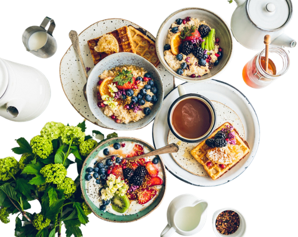
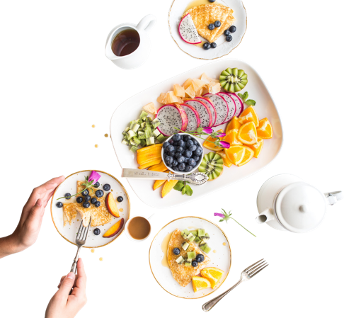

กินไหนดีคลองหก

OUR CONCEPT
ค้นหาง่าย
ค้นหาร้านอาหารหรือเมนู
ที่ต้องการได้ในที่เดียว
เลือกตามพื้นที่
เลือกโซนที่สะดวก
เช่น สะพานชมพู เลียบคลองหก
และหน้า มทร.ธัญบุรี
ข้อมูลครบที่เดียว
ดูข้อมูลสำคัญของร้าน
เช่น คะแนน เวลาเปิด-ปิด ที่อยู่
เบอร์โทรศัพท์ และตำแหน่งร้าน
OUR COVERAGE
สะพานชมพู
ซอย 18 - 20
เลียบคลองหก
ซอย 22 - 26
หน้า มทร.ธัญบุรี
ซอย 28 - 30